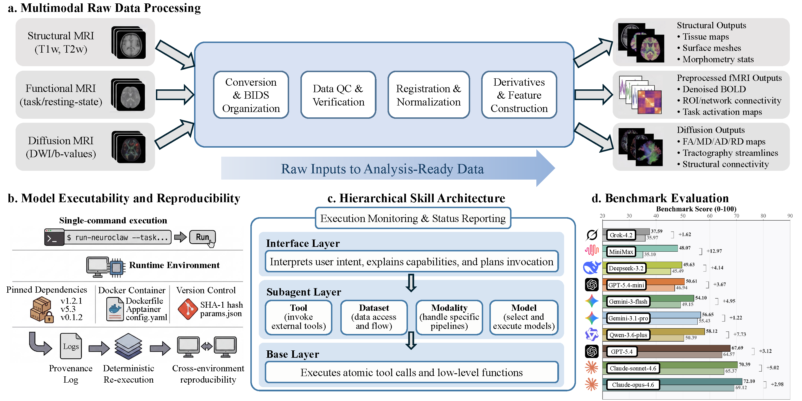

100
Benchmark Coverage
NeuroClaw turns neuroimaging workflows into executable, iterative, and reproducible research loops across data preparation, model execution, validation, and refinement.
Benchmark Coverage
base-subagent-interface
Dataset-Aware Orchestration
Execution and Audit Logs

NeuroClaw starts from raw multimodal data and uses dataset semantics, BIDS metadata, and workflow stage context to keep downstream analyses scientifically coherent.
Managed Python environments, Docker support, GPU setup, checkpoints, artifact checks, and audit logs make neuroimaging toolchains easier to rerun and verify.
A three-tier interface, subagent, and base-skill design decomposes long neuroimaging workflows into controlled, reusable operations across tools, modalities, datasets, and models.
NeuroBench evaluates planning completeness, tool-use reasonableness, and command/code correctness under realistic neuroimaging tasks with and without NeuroClaw skills.
1.1 Data I/O and BIDS: BIDS organization, DICOM→NIfTI, NIfTI→DICOM, metadata checks, and low-level NIfTI/FreeSurfer I/O with Nibabel.
1.2 Environment and Engineering: Conda, Docker, dependency planning, shell execution, Git workflows, Overleaf, harness utilities, and skill updates.
1.3 Research Discovery: academic literature search, multi-engine evidence collection, research idea generation, and method design support.
2.1 Structural and Functional Toolchains: FreeSurfer, FSL, Nilearn, fMRIPrep, CONN, and HCP Pipelines for reconstruction, segmentation, registration, GLM, ICA, and connectivity.
2.2 Diffusion and Electrophysiology: DIPY, QSIPrep, and MNE support denoising, tensor metrics, tractography, EEG cleaning, and feature extraction.
2.3 Visualization and Clinical Interop: brain network visualization, zALFF regional summaries, FreeSurfer mesh export, and DICOM-compatible output conversion.
3.1 sMRI: T1/T2 preprocessing, tissue segmentation, cortical parcellation, FreeSurfer surfaces, and WMH segmentation from FLAIR+T1w inputs.
3.2 fMRI: preprocessing, denoising, ROI time series, seed/ROI connectivity, task GLM, resting-state ICA, and effective connectivity routes.
3.3 DWI + EEG: eddy correction, diffusion tensor metrics, tractography, connectome construction, EEG artifact removal, spectral analysis, and feature extraction.
4.1 ADNI: acquisition guidance, BIDS organization, preprocessing, ROI analysis, phenotype modeling, and derived dataset generation.
4.2 HCP: structural, functional, and diffusion execution across HCP Pipelines with multimodal result integration.
4.3 UK Biobank and Expansion Targets: UKB post-extraction brain analysis plus routes that can extend toward ADHD200, ABCD, ABIDE, COBRE, PNC, HBN, and UCLA datasets.
5.1 Deep Learning: BrainGNN, FM-APP, and NeuroStorm for phenotype prediction and neuroimaging representation learning.
5.2 Statistical and Classical ML: GLM, ICA, DictLearning, SVM, SpaceNet, K-means, hierarchical clustering, filtering, and detrending.
5.3 Model Routing: unified model entry with preprocessing dependency checks, input/output mapping, executable plans, and benchmark-friendly evaluation steps.
6.1 End-to-End Pipelines: single-modality and dataset-specific chains for sMRI, fMRI, DWI, EEG, ADNI, HCP, and UKB analysis.
6.2 Experiment Control: METHOD-to-experiment execution, Git-based setup, ablations, checkpoints, verification, audit logs, and resumable runs.
6.3 Research Output: manuscript writing, clean dialogue logs, visualization assets, reproducibility reports, and maintainable skill-library updates.
| Dataset | Supported Modalities | Additional Data | Cohort Scale | Official Link |
|---|---|---|---|---|
| ABCD Study | T1w; T2w; dMRI; rs-fMRI; task-fMRI | Physical and mental health; substance use; culture/environment; neurocognition; biological data | Target cohort of ~11,500 children; full cohort releases through the NIMH Data Archive | ABCD Study |
| ABIDE | T1w; rs-fMRI | ASD/control phenotypic data | 1,112 datasets from 17 international sites | ABIDE |
| ADHD-200 | T1w; rs-fMRI | Diagnostic status; ADHD symptom measures; demographics; medication history; QC measures | 776 participants/datasets across 8 imaging sites | ADHD-200 |
| ADNI | T1w; T2w; FLAIR; dMRI; rs-fMRI; PET | Genetics/omics data; clinical and cognitive assessments | ~2,000+ participants across ADNI phases | ADNI |
| BOLD5000 | T1w; task-fMRI | Visual image stimuli; category and image metadata | 4 participants with 5,000-image visual fMRI sessions | BOLD5000 |
| COBRE | T1w; rs-fMRI | Demographics; handedness; diagnostic information | 147 participants: 72 schizophrenia patients and 75 healthy controls | COBRE |
| DMT-HAR-MED | rs-fMRI | Psychedelic intervention conditions; behavioral and physiological measures | 40 participants in OpenNeuro ds006644 | DMT-HAR-MED |
| HBN | T1w; T2w; dMRI; rs-fMRI; task-fMRI; EEG | Psychiatric, behavioral, cognitive, lifestyle, genetics, actigraphy | ~3,900+ released participants; target resource of at least 10,000 ages 5-21 | HBN |
| HCP Aging | T1w; T2w; dMRI; rs-fMRI; task-fMRI | Behavioral, cognitive, health, and demographic measures | ~700+ adults ages 36-100 | HCP Aging |
| HCP Development | T1w; T2w; dMRI; rs-fMRI; task-fMRI | Behavioral, cognitive, health, and demographic measures | ~600+ children and adolescents ages 5-21 | HCP Development |
| HCP Early Psychosis | T1w; T2w; dMRI; rs-fMRI; task-fMRI | Diagnostic, clinical, behavioral, and cognitive measures | ~250 early psychosis and control participants | HCP Early Psychosis |
| HCP Young Adult | T1w; T2w; dMRI; rs-fMRI; task-fMRI | Behavioral and cognitive measures | ~1,200 young adult participants | HCP Young Adult |
| MND | rs-fMRI; task-fMRI | Motor neuron disease diagnosis and clinical measures | 59 participants in OpenNeuro ds005874 | MND |
| Natural Scenes Dataset | T1w; task-fMRI | Natural image stimuli; behavioral responses; image annotations | 8 participants with dense repeated visual fMRI | Natural Scenes Dataset |
| PNC | T1w; dMRI; ASL; rs-fMRI; task-fMRI | Genotyping; clinical and neuropsychiatric assessment; Computerized Neurocognitive Battery | >9,500 youth cohort; 1,445 participants with neuroimaging | PNC |
| REST-meta-MDD | rs-fMRI | MDD diagnosis; clinical and demographic measures | 2,428 participants across 25 cohorts | REST-meta-MDD |
| SEED-IV | EEG | Emotion labels across four affective categories; trial-level session metadata | 15 subjects across 3 sessions for emotion decoding benchmarks | SEED-IV |
| SEED-VIG | EEG | Vigilance/fatigue labels; continuous alertness annotations; behavioral metadata | 23 subjects in sustained-attention driving-style vigilance recordings | SEED-VIG |
| TCP | rs-fMRI | Psychiatric diagnostic interviews; cognitive and clinical assessments | 245 transdiagnostic participants | TCP |
| UCLA CNP | T1w; dMRI; rs-fMRI; task-fMRI | Diagnostic groups; neuropsychological and phenotypic assessments | 272 participants in OpenNeuro ds000030 | UCLA CNP |
| UK Biobank | T1w; T2w; FLAIR; dMRI; rs-fMRI; task-fMRI | Genotype/genomic data; questionnaires; hospital records; environmental data; sociodemographic data; physical measures | ~50,000 participants with multimodal imaging data | UK Biobank |
Use NeuroClaw to prototype auditable neuroimaging pipelines and autonomous experiment loops in your lab.